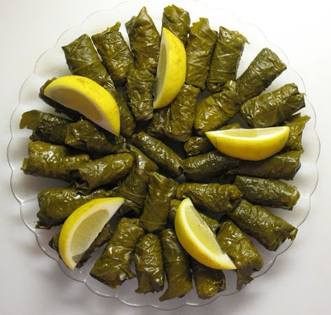
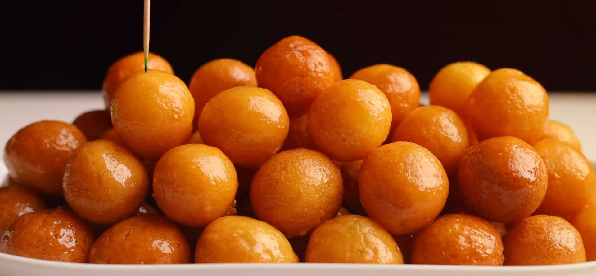
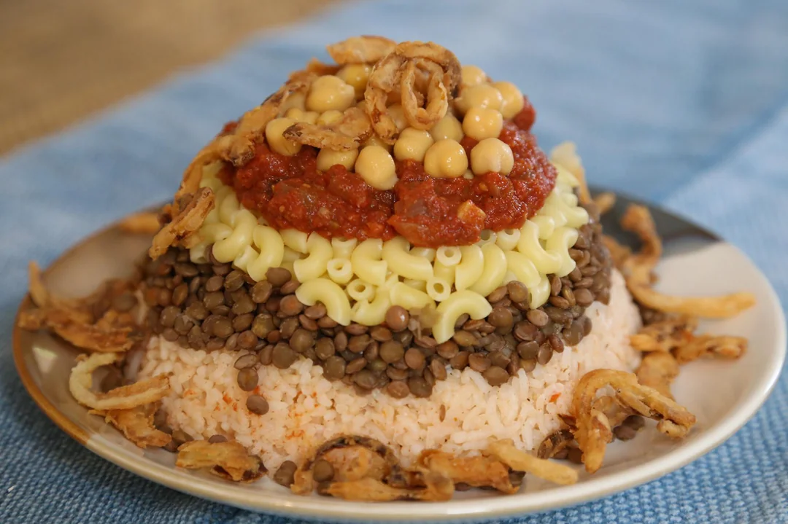

Mahshi
Mahshi (Arabic for "stuffed") is a widely beloved, traditional dish across Egypt and the Middle East, cherished as the ultimate comfort food and a staple at family gatherings and celebrations. The dish is a vibrant assortment of various vegetables and leaves, such as zucchini, eggplant, bell peppers, tomatoes, cabbage, and grape leaves.

Zalabia
Zalabia is a highly popular and beloved Egyptian sweet treat, essentially the Middle Eastern equivalent of donut holes. Known also as Luqmat al-Qadi (meaning "judge's morsels"), these golden, bite-sized fried dough balls have a history tracing back to 10th-century Arabic cookbooks. They are a common and cherished street food, often sold in paper cones, and are a staple dessert particularly prevalent during the holy month of Ramadan.

Koshari
Koshari is Egypt's most famous and beloved street food. It is a lovely, filling dish made by layering rice, lentils, macaroni, and chickpeas. It is topped with a flavorful spiced tomato sauce, a tangy garlic vinegar, and that's it!
